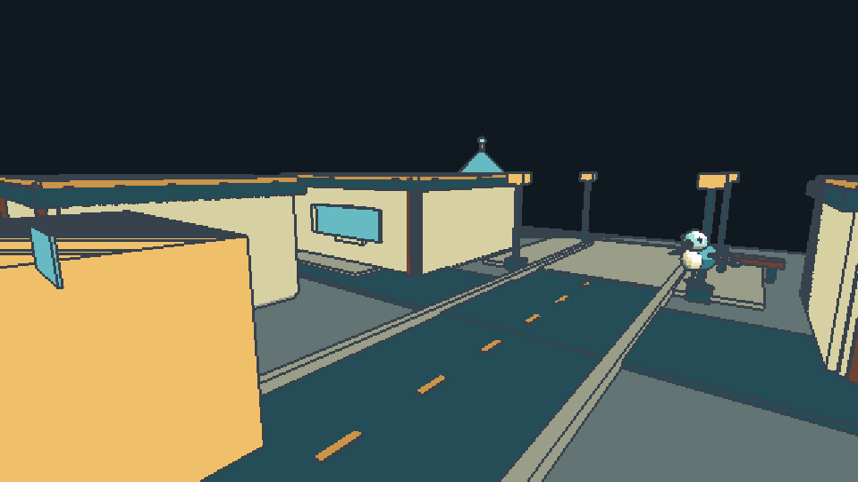

Tracefolio REPORTS & ISSUES
Tracefolio REPORTS & ISSUES일반 샘플 창문이 벽을 관통하는 기본 프리셋 수정
해결16번·135픽셀 프리셋의 Through walls를 해제하고 생성 스크립트를 수정했습니다. 실제 Unity 동일 카메라 전후 렌더와 16맵 회귀를 확인했습니다.
작업 결과
사용자가 표시한 왼쪽 창문이 벽 뒤로 가려지도록 수정했습니다. 후순위 렌더 기능과 전용 09번 관통 예제는 유지했습니다.
수정 전 — 같은 카메라에서 Through walls 활성:

수정 후 — 벽 깊이 유지:

실행 중인 Unity의 실제 Camera.Render 출력이며 Play UI 캡처가 아닙니다. 두 이미지는 960×540 원본 PNG, 각각 28KB 이하이며 편집하지 않았습니다.
변경 내용
재현 조건
Unity 6000.0.83f1, Windows, 기존 TurnRoom의 16-CompleteStyle 씬, Built-in 렌더 파이프라인. GUI 신규 실행·활성화·포커스 전환 없이 기존 개발용 명령 통로 사용.
재현 순서
16-CompleteStyle의 원본 프리셋을 메모리에서 복제하고 같은 카메라에서 Through walls true/false로 각각 렌더합니다. 원본 카메라 targetTexture와 프리셋 참조는 finally에서 복원하며 씬/Play 상태를 전환하지 않습니다.
기대 동작
일반 맵의 창문은 앞쪽 벽에 가려지고 벽 구멍을 통해 보이는 부분만 표시되어야 합니다.
실제 동작
수정 전 활성 프리셋과 coarse135 프리셋은 drawLateThroughWalls: 1이었습니다. 같은 카메라에서 왼쪽 창문이 벽 위로 드러나는 결과를 실제 렌더로 재현했습니다.
원인
BuildPaidSamples.mjs가 lateLayers 마스크를 켜면 drawLateThroughWalls도 자동으로 1로 설정했습니다. 135픽셀 프리셋도 1이었습니다. 실제 Built-in 코드는 이 값이 true일 때 후순위 패스의 깊이를 지우도록 설정합니다. 소스와 실제 로드 값·렌더 결과로 확인했습니다.
적용 내용
16-CompleteStyle.asset과 Outpost-CoarseThroughWalls.asset의 drawLateThroughWalls를 0으로 수정하고 두 생성 스크립트에서 재생성 시 이를 유지하도록 고쳤습니다. 원본 GUID/파일명은 유지했습니다. 의도된 09-ThroughWalls.asset은 1을 유지합니다. 새로운 실제 렌더를 9개 번역 가이드와 스크린샷 manifest에 추가했으며 과거 캡처 해시는 변경하지 않았습니다. 제출 스테이징과 압축본에도 반영했습니다.
검증
실제 Unity 프리셋·전후 비교: 일반 16번 false, coarse135 false, 09번 true. 전체 3,197픽셀, 좌측 1,436픽셀 변화. 원본과 결과를 직접 시각 비교해 사용자가 표시한 왼쪽 관통 영역이 사라진 것을 확인했습니다.
22개 핵심 검사, 16개 맵 회귀 통과. 최종 패키지 전수 대조 통과. 코드가 실제로 새 QA 명령을 처리한 개발 어셈블리 ac8291f1-7b89-4c18-b36f-28f1b2d7d9ce를 기록했습니다. 최초 구형 도메인의 Unknown QA action 실패는 로컬 이력에 보존했고 이후 기존 핵심 검사 중 AssetDatabase.Refresh를 거쳐 새 어셈블리를 로드했습니다.
교훈: 해상도 선택이 관통 모드를 함께 켜지 않도록 제품 생성 규칙을 분리했습니다. 제품별 교훈이며 기존 전역의 증거·포커스 규칙과 중복되므로 전역 지침 변경 없음.
남은 사항
이번 버그의 Built-in 재현·수정 검증은 완료했습니다. URP는 이전 기능 검사 통과 이력을 보존했으나 이번 프리셋 수정 후 URP 신규 실행은 미실행입니다. 전체 스토어 제출 준비의 GUI/새 설치 대기는 별도 결과 보고서에 기록합니다.
작업 시간
- 제안 시간: 이번 후속 20
35분 (최초 제출 준비 3050분) - 실제로 완료된 시간: 후속 시작 2026-11-01 15:20:55 KST. 2026-11-01T06:30:12.384Z 현재 기록; 전체 제출 준비 미완료.
- XERJ: 실패 — Status 실행 결과 XERJ node is not running. 새 백그라운드 콘솔 실행은 no-focus 제한 아래 보류하고 rg/현재 소스 및 실제 Unity 실행으로 대조했습니다.